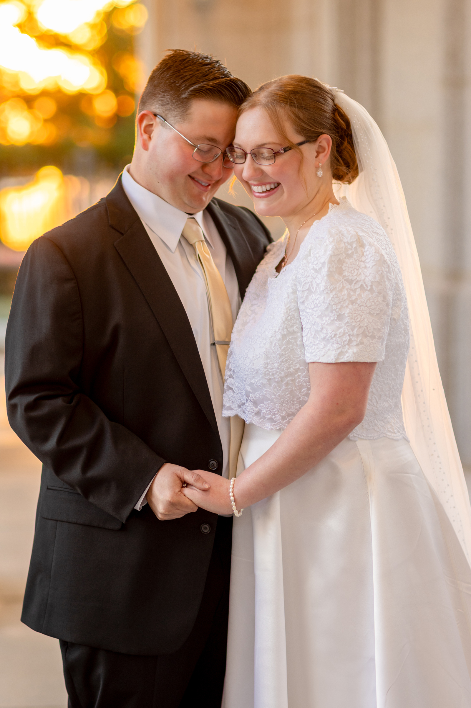
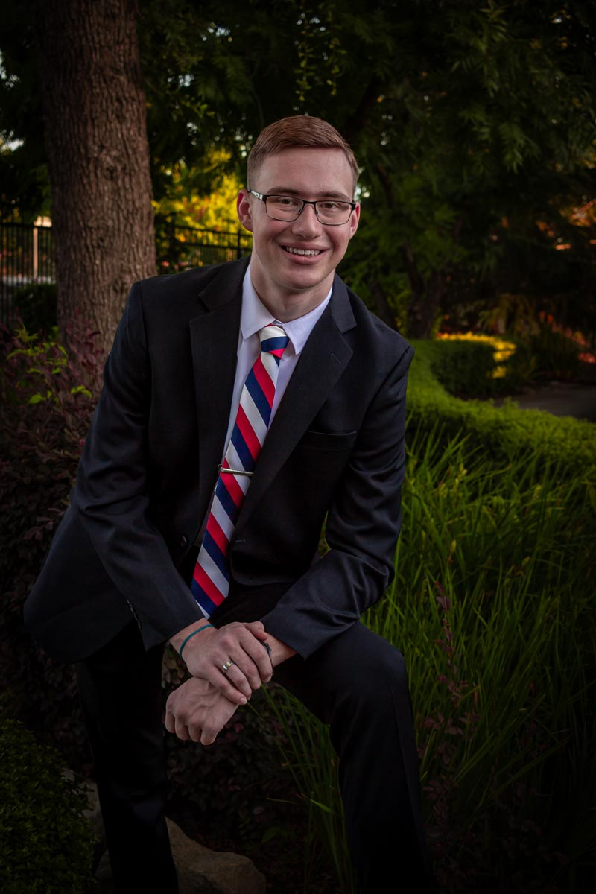
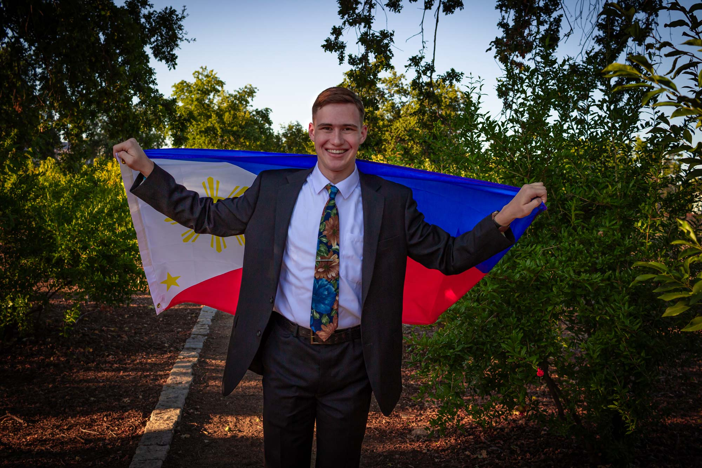

Hello! I'm Jessica Taylor, and I'm from California. I married my sweetheart Kelly in February of 2025, and we are lucky enough to live close to both our families! I'm studying Visual Communications, and I really enjoy photography, design, reading, baking and cooking, D&D, and watching movies with my husband.
I have my own freelance photography business, called Jess Taylor Photography, and I really enjoy it! I primarily do portraits, such as senior photos, missionary photos, and family photos, though I also do some couples photos and other individual portraits. I got to take my brother's missionary photos before he left for the Philippines, and that was really special!
  Here is my husband and I when we got married, and these are a few of my favorite pictures that I took of my brother before he left for his mission.